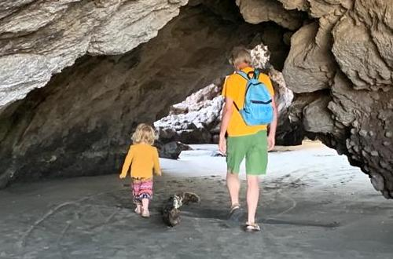

|  |
A day trip provides an opportunity for all sorts of fun and games, and for broadening children's experience of the natural world. Woods, rivers, hills and of course the coast, all hold their own special fascination. Older children may grumble about being taken for walks in the countryside, but experiences of this sort when they are young often lead to a taste for natural places when they grow up. By exposing children to the beauty of Nature you may bequeath them a lifetime of pleasure. |